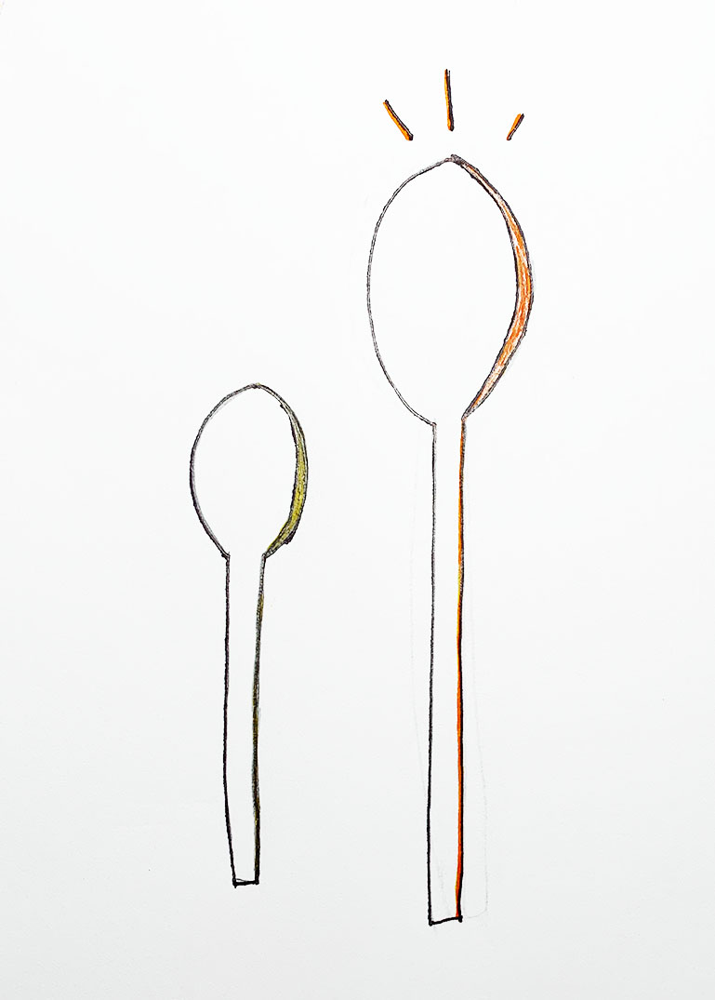
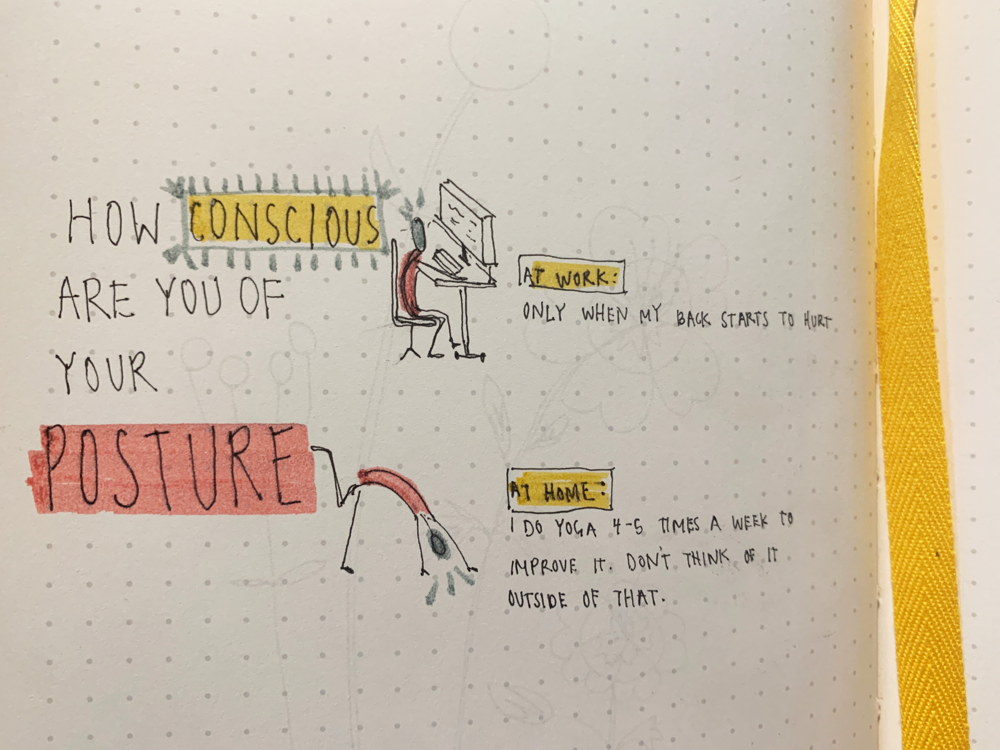
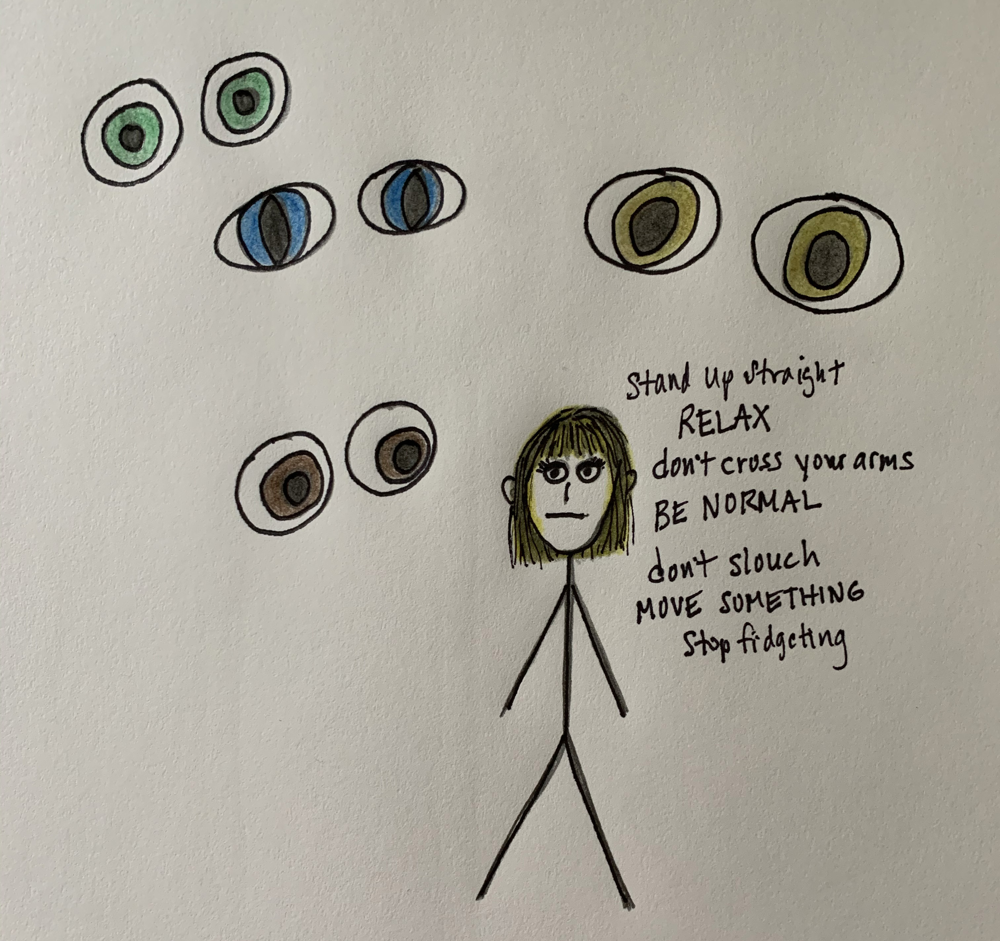

Have you ever had a haircut so bad you cried?
When you open the drawer after having poured yourself a bowl of cereal, do you reach for a small or large spoon?
How conscious are you of your posture?
Will you agree to let a lover use your toothbrush?
Which chemicals' smells do you like?
During which phase of live did you acquire the bulk of your friends?
Yes, more than once. Getting a haircut for me is how other people experience the dentist.
Just once. It was so short I couldn't even style it and I looked like a boy.



